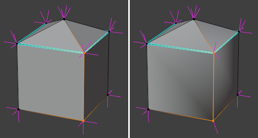

Chỉnh sửa Normals¶
Menu Normals có thể được mở dưới dạng popover bằng cách nhấn Alt-N.
Hầu hết các toán tử trong menu này làm việc với custom split normals, là những vector normal thuộc về các góc face (chứ không phải vertex). Có nhiều cách để chọn các góc này:
Nếu chế độ chọn được đặt thành Vertex hoặc Edge, việc chọn một vertex hoặc edge cũng chọn các góc gần nhất của những face mà nó thuộc về.
Nếu chế độ chọn là Face, việc chọn một face cũng chọn các góc của face đó.
Nếu cả hai chế độ Vertex và Face cùng được bật, chọn một vertex rồi thêm một face vào vùng chọn sẽ chỉ chọn đúng góc face tương ứng.
Tương tự như trên, nếu cả hai chế độ Edge và Face cùng được bật, chọn một edge rồi thêm một face vào vùng chọn sẽ chỉ chọn đúng hai góc face tương ứng.
Xem thêm
Overlay của 3D Viewport dùng để hiển thị normals.
Panel Geometry Data trong mesh properties dùng để xóa custom normals.
Mesh Data Transfer (toán tử hoặc modifier) dùng để sao chép normals từ mesh khác.
Normal Edit Modifier và Weighted Normal Modifier dùng để tính toán hoặc thay đổi normals dựa trên một số tiêu chí nhất định.
Flip¶
Tham khảo
- Mode:
Edit Mode
- Menu:
Thay đổi hướng của các face được chọn, biến "mặt trước" của chúng thành "mặt sau" và ngược lại. Thao tác này không ảnh hưởng đến custom split normals.
Overlay Face Orientation của 3D Viewport rất hữu ích để nhanh chóng nhận ra những face bị đặt sai hướng.
Recalculate¶
Tham khảo
- Mode:
Edit Mode
- Menu:
và
- Shortcut:
Shift-N và Shift-Ctrl-N
Đảo hướng các face được chọn ở những chỗ cần thiết, khiến tất cả chúng cùng chỉ ra bên ngoài (hoặc vào bên trong). Mesh không cần phải là một thể tích khép kín khi dùng thao tác này.
Giống như Flip, thao tác này không ảnh hưởng đến custom split normals.
Set from Faces¶
Tham khảo
- Mode:
Edit Mode
- Menu:
Đặt custom split normals của mỗi vertex được chọn thành normal trung bình của các face được chọn xung quanh nó.
- Keep Sharp Edges
Khi đánh dấu, các góc face thuộc một edge Sharp sẽ giữ nguyên custom normal ban đầu của chúng.
Rotate¶
Tham khảo
- Mode:
Edit Mode
- Menu:
- Shortcut:
R rồi đến N
Công cụ dùng để xoay custom split normals của các góc face được chọn bằng cách di chuyển chuột. Nhấp LMB để xác nhận hoặc RMB để hủy.
Point to Target¶
Tham khảo
- Mode:
Edit Mode
- Menu:
- Shortcut:
Alt-L
Khiến custom split normals của các góc face được chọn chỉ về một mục tiêu nhất định. Sau khi nhấp vào mục menu hoặc nhấn phím tắt, hãy chọn mục tiêu bằng cách nhấn một trong các phím sau (cũng được hiển thị trên thanh trạng thái):
M cho con trỏ chuột.
L cho Pivot Point.
O cho gốc object.
Ctrl-LMB cho 3D Cursor. Thao tác này cũng thay đổi vị trí của Cursor.
Ctrl-RMB cho một vertex, edge hoặc face nhất định. Chú ý đừng nhấp vào chỗ không có geometry, vì làm vậy sẽ extrude vùng chọn thay vì chọn mục tiêu.
Ngoài ra, các tùy chọn sau đây khả dụng:
- Invert I
Khiến các normal chỉ ra xa mục tiêu thay vì chỉ về nó.
- Align A
Tất cả các normal sẽ cùng chỉ về một hướng: từ vị trí trung bình của các vertex được chọn đến mục tiêu.
- Spherize S
Nội suy giữa hướng ban đầu và hướng mới của từng normal. Giá trị nội suy có thể được đặt trong panel Adjust Last Operation sau khi xác nhận toán tử.
- Reset R
Đặt lại custom normals về đúng trạng thái khi thao tác bắt đầu.
Sau khi cấu hình xong normals, nhấn LMB hoặc Return để xác nhận. Các tùy chọn trên vẫn còn có thể thay đổi trong panel Adjust Last Operation.
Merge¶
Tham khảo
- Mode:
Edit Mode
- Menu:
Áp dụng smooth shading cho các face được chọn và xóa dấu Sharp trên các edge được chọn. Sau đó, tại mỗi vertex được chọn, đặt các custom normal thuộc một face được shade Smooth về hướng trung bình của chúng. (Những custom normal thuộc face được shade Flat được giữ nguyên.)
Để lấy trung bình custom normals mà không phụ thuộc vào vùng chọn face, hãy dùng toán tử Average.
Split¶
Tham khảo
- Mode:
Edit Mode
- Menu:
Áp dụng flat shading cho các face được chọn và đánh dấu các edge được chọn là Sharp. Sau đó, tại mỗi vertex được chọn, đặt từng custom normal thuộc một face được shade Flat thành normal của face đó. (Những custom normal thuộc face được shade Smooth được đặt thành trung bình của các normal của những face đó.)
Average¶
Tham khảo
- Mode:
Edit Mode
- Menu:
Với mỗi vertex được chọn, chia các góc face được nối với nó thành các nhóm dựa trên các edge Sharp, sau đó đặt custom normals của các góc face trong từng nhóm thành một giá trị trung bình nhất định. Panel Adjust Last Operation có các tùy chọn sau:
- Type
- Custom Normal:
Đặt custom normals của các góc face trong từng nhóm thành trung bình của chúng.
- Face Area:
Đặt custom normals của các góc face trong từng nhóm thành trung bình có trọng số của các face normal. Trọng số được quyết định theo diện tích face: face lớn hơn có ảnh hưởng nhiều hơn đến normal cuối cùng.
- Corner Angle:
Giống Face Area, ngoại trừ việc trọng số được quyết định theo các góc của face.
- Weight
Nếu Type được đặt thành Face Area hoặc Corner Angle, Weight sẽ chi phối normal trung bình nghiêng về những face normal nào. Nếu là 50, một phép trung bình có trọng số đơn giản được dùng. Nếu là 100, normal trung bình chỉ dựa trên những face có diện tích lớn nhất (hoặc những góc có độ lớn góc lớn nhất). Nếu là 1, normal chỉ dựa trên những face có diện tích nhỏ nhất (hoặc những góc có độ lớn góc nhỏ nhất).
- Threshold
Giá trị dung sai để coi các diện tích face (hoặc các góc face) là bằng nhau.

Lấy trung bình custom normals cho hai vertex. Vertex phía trên có hai nhóm face được ngăn cách bởi các edge Sharp, nên hai giá trị trung bình riêng biệt được tính. Vertex phía dưới không có edge Sharp nào, nên chỉ một giá trị trung bình được tính.¶
Xem thêm
Weighted Normal Modifier thực hiện việc này một cách không phá hủy (non-destructive).
Copy Vector¶
Tham khảo
- Mode:
Edit Mode
- Menu:
Sao chép một vector normal duy nhất vào clipboard nội bộ:
Nếu một face được chọn, normal của face đó được sao chép.
Nếu một vertex được chọn, normal của nó được sao chép, nhưng chỉ khi tất cả custom split normals của nó đều giống nhau.
Nếu một góc face được chọn, custom split normal của góc đó được sao chép.
Paste Vector¶
Tham khảo
- Mode:
Edit Mode
- Menu:
Dán normal vector đã sao chép trước đó lên các góc face được chọn. Panel Adjust Last Operation có tùy chọn sau:
- Absolute Coordinates
Khi bật, đặt custom split normals của các góc face được chọn thành normal vừa dán. Khi tắt, cộng normal vừa dán vào như một offset.
Smooth Vectors¶
Tham khảo
- Mode:
Edit Mode
- Menu:
Làm mượt custom normals của mỗi vertex được chọn bằng cách lấy trung bình với các normal tại những vertex lân cận. Panel Adjust Last Operation có tùy chọn sau:
- Factor
Cường độ làm mượt. Cụ thể, đây là giá trị nội suy giữa các normal ban đầu và các normal đã lấy trung bình.
Reset Vectors¶
Tham khảo
- Mode:
Edit Mode
- Menu:
Đặt lại custom normals của các góc face được chọn về giá trị mặc định.
Select by Face Strength¶
Tham khảo
- Mode:
Edit Mode
- Menu:
Chọn những face có Strength (Weak, Medium hoặc Strong) nhất định và bỏ chọn các face khác.
Thuộc tính này được Weighted Normal Modifier sử dụng nếu cài đặt Face Influence của nó được bật.
Set Face Strength¶
Tham khảo
- Mode:
Edit Mode
- Menu:
Đặt Strength của các face được chọn thành Weak, Medium hoặc Strong. Theo mặc định, mọi face đều có strength là Medium.
Thuộc tính này được Weighted Normal Modifier sử dụng nếu cài đặt Face Influence của nó được bật.